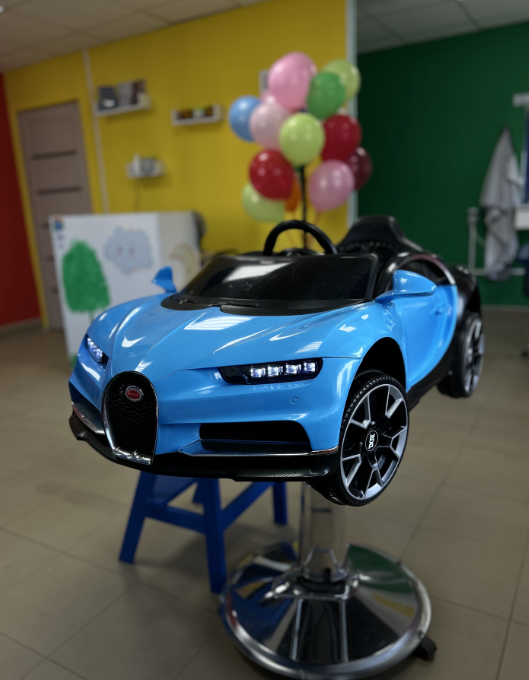
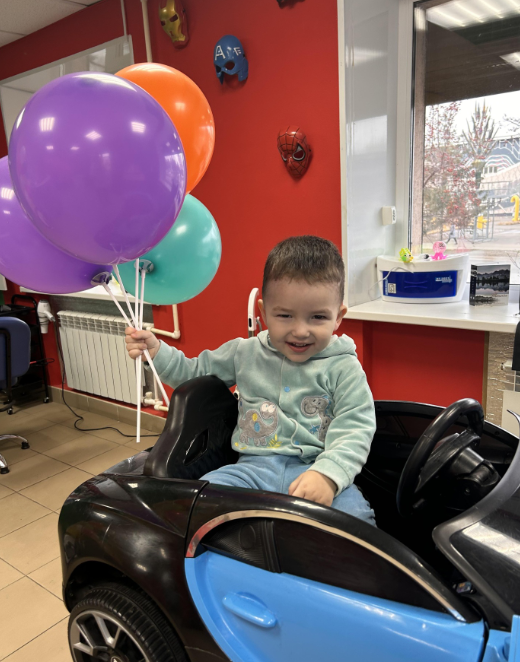
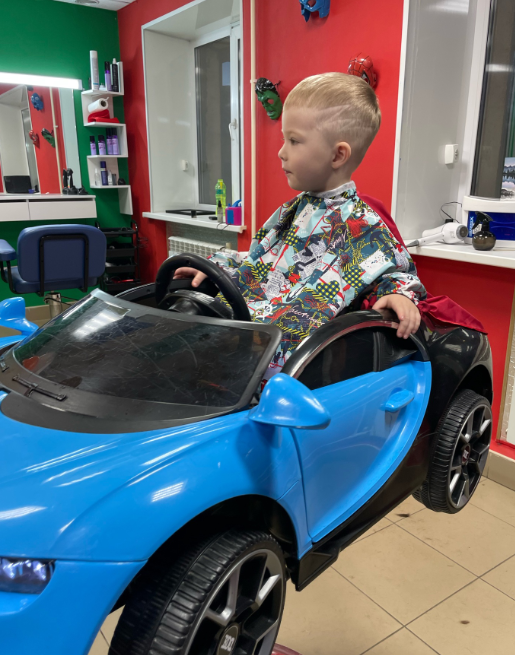
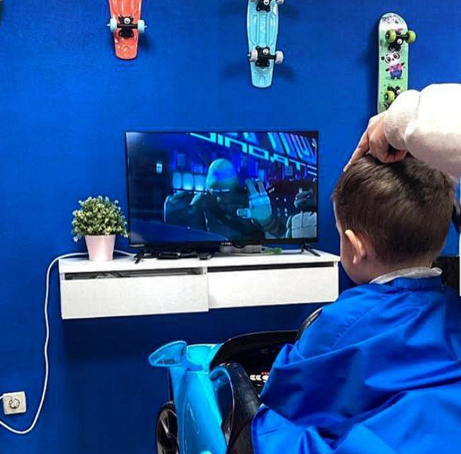
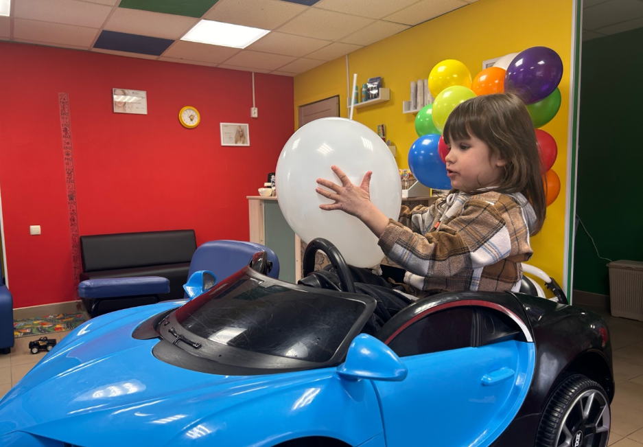
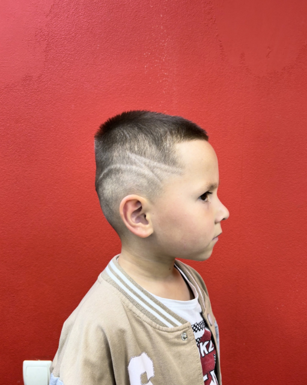
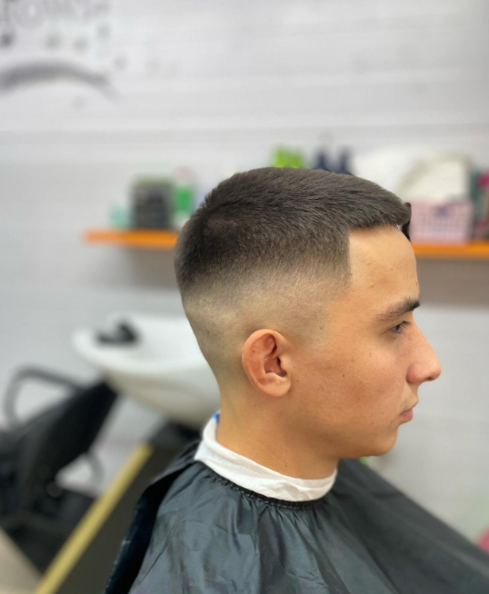
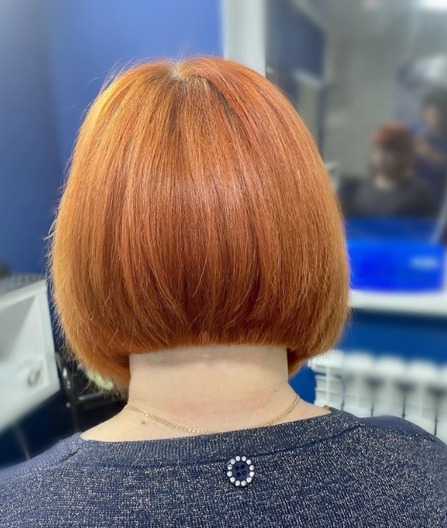

01 / ПОГРУЖЕНИЕЗа руль —
За руль —
и вперёд!
Машинка с настоящим рулём вместо обычного кресла.

ДЕТСКИЕ СТРИЖКИ • АЛЬМЕТЬЕВСК
Когда кресло — это машинка, а впереди мультики, знакомство с новой причёской становится гораздо интереснее.

ПРИВЕТ, МАЛЕНЬКИЙ ГОСТЬ!
Первое, что хочется рассмотреть в «Умке», — синюю машинку. У неё руль, колёса и настоящее место для маленького водителя. А впереди — экран с мультиками.
И пока ребёнок занят своей важной поездкой, появляется время для новой стрижки. Можно вместе выбрать понравившийся образ и сохранить пару фотографий на память.
Смотреть детские стрижки
ВМЕСТО СКУЧНОГО КРЕСЛА
«Умка» — семейная парикмахерская, в которой у маленьких гостей есть своё яркое пространство.
Машинка с настоящим рулём вместо обычного кресла.

Экран прямо перед детским креслом — можно смотреть, пока мастер работает.

Яркие стены, воздушные шарики и детские детали — всё на фотографиях настоящей «Умки».

От аккуратных коротких форм до рисунков на висках — загляни в нашу фотогалерею и покажи ребёнку варианты.
Смотреть работы
ФОТОИСТОРИИ ИЗ «УМКИ»
Выбирайте вместе: можно открыть любую фотографию крупнее и рассмотреть стрижку со всех сторон.
И ДЛЯ БОЛЬШИХ ТОЖЕ
Пока у детей тут свои маленькие приключения, взрослые тоже могут заглянуть за новой причёской. Но сегодня вся главная роль — у наших юных водителей.
Где мы находимся

ПОРА К НАМ!
Встречаемся в Альметьевске. Захватите хорошее настроение — остальное найдётся по дороге.
Актуальное время работы и способы записи смотрите в карточке парикмахерской.
Это независимый демонстрационный дизайн-концепт, созданный KLD Web Studio по собственной инициативе, а не официальный сайт семейной парикмахерской «Умка». Разработчик не представляет организацию и не принимает от её имени оплату или заявки. Информация об услугах, графике и контактах требует согласования с владельцем; ссылки на контакты ведут на внешнюю карточку организации.
Для публикации фотографий детей и других людей необходимо подтверждение прав на изображения и согласия законных представителей, когда они требуются. Наличие фотографий в репозитории или справочнике не заменяет такого согласования. KLD Web Studio ↗